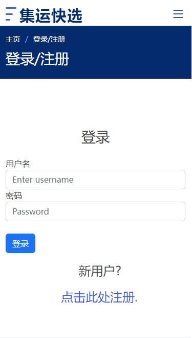

Assignment 5
The proposed solution is designed to help users efficiently access all the information they need to help them smoothly select and use a consolidation service, including all major service providers, along with their profiles, pricing, timeliness, pickup locations, and usage guides for new users, as well as user reviews shared on the forums.
Effective access to information is the main functional requirement to be verified. It is also important to test the user's registration rate. Both usability testing and AB testing will be conducted to get feedback on the validation.
Three usability tasks were designed to test the ease of use in purchase:
a. Where would you click to get information
b. How would you get more details and what details would you get
c. Register and login
Three post-test questions were also designed to obtain recommendations for improvement:
a. Please rate the overall process: 5 as very good, 1 as very bad
b. What difficulties did you encounter in the process?
c. How do you think the website can be improved?
The user testing went well and all participants successfully completed all three tasks. Their satisfaction level was higher compared to the first round of testing.
Regarding the monetization, the participants' feedback was consistent with the results of the previous user study (interviews). Most of them said that it was cost-effective to buy convenient information at a low price. However, participants' attitudes are unclear for now regarding the forum communication power that premium members will receive. This is because the current version of the webpage does not yet do this feature, i.e., restrict non-members from viewing the communication area as well as posting
After building my website, I conducted an A/B test with Google Optimize. The purpose of this A/B test was to see if the registration guidelines on the login page were clear. That is, whether non-registered users could efficiently find the registration portal and successfully register to log in.
Original version: At the bottom of the login form there is a line in small font, "New user? Click here to register".
For the variant 1 version, the line is made larger and the registration portal, i.e. "Click here to register", is displayed on a separate line.

You can find out more about this project
here.